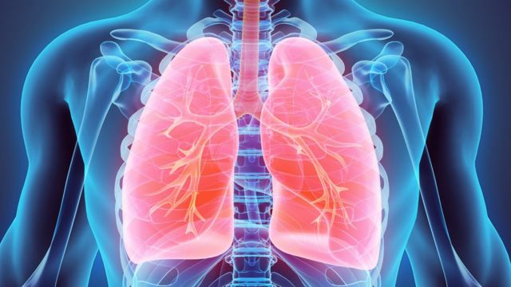
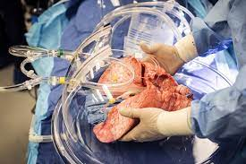
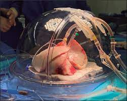
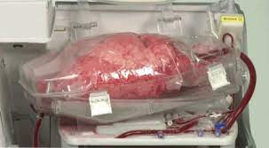

fabricación de órganos humanos para trasplante |
|
|  |
Características del órgano |
|
|
El trasplante de pulmón es una cirugía para reemplazar uno o ambos pulmones enfermos por pulmones sanos de un donante. Durante la operación, el cirujano hace un corte en el pecho y extirpa el pulmón enfermo. Después, el cirujano cose el pulmón nuevo a los vasos sanguíneos principales y las vías respiratorias. Los pulmones del donante deben estar libres de enfermedades y ser lo más compatibles posible con su tipo de tejido . Esto reduce la probabilidad de que el cuerpo vaya a rechazar el pulmón trasplantado. Un donante vivo también puede dar un pulmón. Se necesitan dos o más personas. |  |
Técnica para su fabricación |
|
|  |
En algunos casos los pulmones de trasplante son donados y en otras ocasiones son impresos con una impresora 3D que serían los órganos artificiales. también hay un aparato microprocesador con células de pulmón y vías sanguíneas humanas para que el cuerpo humano no tenga la necesidad de intromisión al cuerpo |
Beneficios y propuestas de mejora |
|
|
El beneficio del trasplante de solo 1 pulmón es que la cirugía es más simple. Además se reduce el tiempo en lista de espera o no hay tiempo en lista de espera, esto permite salvar una mayor cantidad de vidas. Los pulmones dañados o no saludables pueden dificultar que el cuerpo reciba el oxígeno que necesita para sobrevivir. |  |
Opinión |
|
|
En mi opinión creo que el trasplante de pulmones es algo que está favoreciendo en las personas que están siendo afectadas de los pulmones enfermos, enfermedades pulmonares, fibrosis quística, entre otros. Además que los pulmones, son un órgano fundamental para la vida humana. |
Datos personales |
||
|
Nombre y apellido: Antonella Vega Centeno Grado y seccion: 2"C" de secundaria Profesor de informática: Gerard Durand Gamarra Profesora de ciencia y tecnología: Maritza Jesús Díaz Olaya |